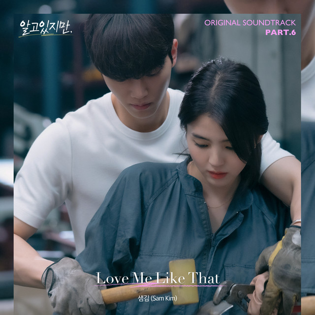
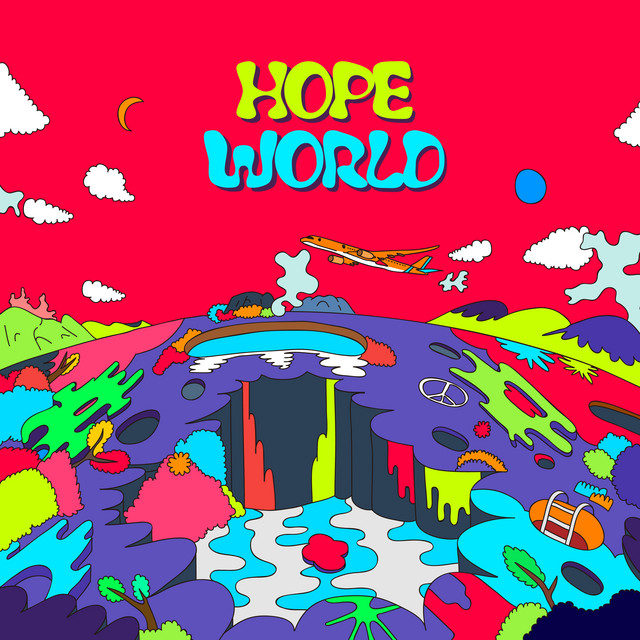

minhas músicas favoritas
perdição
foi a primeira música que favoritei na vida. aquela que sempre vem na cabeça quando perguntam qual é minha música favorita.
ouça e seja feliz comigo
ginseng strip 2002
essa esteve muito presente em um momento bem memorável da minha vida, por isso tenho uma mémoria bem afetiva dela. me lembra paixão, descobertas e realização.
ouça e seja feliz comigo

love me like that
esse hino faz parte do dorama nevertheless, que apesar de ser um tanto criticado, eu amo. ela toca nos momentos certos, e eu sempre surtava toda vez que ela começava porquê sabia que ia ser uma ótima cena. ela aquece meu coração.
ouça e seja feliz comigo

daydream (백일몽)
essa eu escutei bastante na mesma época que 'ginseng strip 2002'. mas a lembrança dessa é mais voltada a felicidade. o solzinho (cantor) é sinônimo de felicidade, então é uma representação dele. ela me lembra conquista, cansaço feliz (aquele que compenssa sentir, que vem de algo produtivo), euforia, etc.
ouça e seja feliz comigo
a bela e a fera 2
paz.
ouça e seja feliz comigo